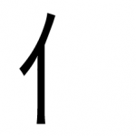
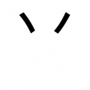
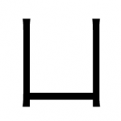
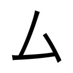
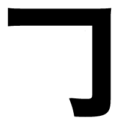

2-Stroke Radicals
Better to ask twice than to lose your way once. - Danish Proverb
Well done! You’ve made it through the 1-stroke radicals. That’s all of ‘em (not too many, right?)!
There are quite a few more 2-stroke radicals compared to 1-stroke radicals. Don’t panic, though! I bet you remember the 1-stroke radicals pretty well (and without much effort). 2-stroke radicals will be the same, just a teensy-tiny bit more difficult. Learn these radicals, though, and you’ll be a 1-2 stroke kanji learning God.
Two
If this radical isn’t self explanatory enough, think about this. Remember what happened to #1? It looks like the (upright) stick has struck again – double homicide. Uh oh, looks like there’s a “radical” murderer on the loose. Why would the stick kill TWO things?
Kettle Lid
This actually looks like a KETTLE LID, right? Just by looks alone this one should be pretty easy to remember. Can you imagine yourself picking up a KETTLE LID that looks just like the one above, and perhaps burning your hand on the steam? What happens when you drop this kettle lid back down after you are burned?
Person
Think of this radical in the following way. There’s a (stick figure) zombie in front of you, coming towards you. You push the stick figure zombie back and it breaks right in half, the upper part of it’s body falling to the ground and the legs staying standing up (looking like the radical above). The top-half of the zombie looks up at its still-standing legs and says “Hey, I’m a PERSON too, you know!”

Influential Person
This radical technically also means “person” (like the one above), but we’re going to shift the meaning a little. The cool thing about this radical is that when you see it as part of a kanji, there’s a decent chance it has something to do with a person. For our intents and purposes, it’s going to mean INFLUENTIAL PERSON, though. The radical kind of looks like the letter “I,” which is the first letter in INFLUENTIAL PERSON. Also, this looks like a podium – and only INFLUENTIAL PERSONs use podiums, to talk to all the people they’re influencing!

Hat
You know those rice paddy hats that you see farmers (and ninjas) wearing? They’re pointed at the top and totally awesome. This is one of those hats, and it looks just like them, so it shouldn’t be too difficult to remember. Just remember, it’s a regular old HAT.
Legs
This radical looks like a pair of LEGS. Remember that the right side leg has a foot, and the left side does not. Can you imagine walking around with only a right-side foot? (You should try to imagine, it will help you remember which side has the extra footy bit at the end).
Enter
Be careful, this one looks just like 人. This radical looks like a tee-pee, and a tee-pee has a nice big ENTRANCE to it. When you enter the tee-pee, imagine yourself overwhelmed by the smell of strawberries. Stand in the ENTRANCE for a little while to take in the wondrous smell.
Fish Legs
This one doesn’t make sense until you learn the four-stroke version of this (just two of these, next to each other), fish tail. Since there are only two little nubbins, the fish has evolved and gained the ability to walk on little FISH LEGS. Imagine a fish jumping out of the water, popping up on two FISH LEGS, and running around the beach. How ridiculous would that be? Can you see the two little FISH LEGS now?

Horns
You can see the horns, right? You could put these HORNS on anything. Donkeys, people, monkeys, and so on. Really, imagine these exact horns (the ones that make up the radical) on a bunch of your favorite hornless animals. Everything looks better with HORNS.
Upside Down Box
This looks just like an UPSIDE DOWN BOX. Do you dare walk up to it and see what’s underneath? If I were you, I’d leave all UPSIDE DOWN BOXES be.
Forehead
Sure, this forehead is a bit square, but that’s because it’s Frankenstein’s forehead. Also, there are no “round” shaped kanji, which means this is as round as you’d get (so can you stretch your imagination a bit and pretend this is someone’s FOREHEAD?)
Ice and Water
Do you remember the 1-stroke radical “drop of liquid?” When you have more than one drop, as you do in this radical, you get WATER (or ICE, sometimes, if you freeze the water!). You can also imagine the drop of liquid going down a slide (the second, lower stroke) so fast that it turns to ice (because things get cold when they go fast!).
Table
Do you remember “legs” from before? If you add a top to those legs, you’ll have yourself a nice TABLE!

Open Box
Unlike the upside down box, this is a right-side-up OPEN BOX. Looks just like a 2-D cutout of a box, right?
Variety Stick Rack
You remember the 1-stroke radicals “barb” and “stick,” right? There are multiple sticks available in this VARIETY STICK RACK. You can choose from a regular stick, or a barb stick. What fun!
Power
This radical means power (and so does the kanji, which looks exactly the same). Imagine this to be a guy flexing his arm downward to show off all his POWER. That is one ridiculously steroid-pumped arm!
Enclosure
This is an ENCLOSURE, meant to capture things (presumably by falling on them). Eventually there will be things inside of this ENCLOSURE, but for now our enclosure is empty. It kind of looks like an overturned box, but more fancy. That right side will swing in and capture anything that goes inside, which is why that right side is longer.
Knife / Sword
If you look at this radical, it kind of looks like the bottom part of a KNIFE or SWORD, along with a hand protector. The blade part is missing, but at least you have the handle to your knife or sword; or, perhaps you have a ton of blades to choose from, and you just need to pop one on to turn it into a KNIFE or SWORD. This radical also looks a lot like the “power” radical (力), except it’s missing the little tiny nubbin at the top. Just remember that 90% of having power is having a SWORD to cut down your enemies.
Spoon
This one means “spoon,” though it doesn’t look it. Instead, imagine a decapitated boy, sitting down, reaching for a SPOON he can’t see or find (and neither can you!).
Box On its side
So we have an upside down box, and a right side up box, but no box on its side. This is a BOX ON ITS SIDE, totally unbroken and still usable. It’s fallen over to the right, because the wind blows from the Pacific Ocean (and you’re still living in Seattle, remember?).
Ten
This radical also actually means “ten.” How many crosses do you need to keep the Catholic giraffes happy (be sure to try and imagine something as ridiculous as Catholic giraffes to help it stick in your memory!). You’ll need TEN crosses.

Shaman’s Stick
This is not only a stick (the one-stroke radical). It’s special, because it has a feather attached to it. Be careful, if a Shaman uses his SHAMAN STICK, he could turn you into a bird to add you to his feather collection.
Seal
No, not the animal. I’m talking about the “sealing up a hole” kind of seal. This radical looks almost like the overturned box radical, but the bottom is almost SEALed off. That’s a pretty mediocre SEAL if you ask me.
Cliff
Lucky for you, this one actually looks like a cliff. Just remember, this cliff is facing the Pacific Ocean (West from Seattle). You can stand on the CLIFF and watch the beautiful ocean (way) below and feel the sea breeze on your face. It feels exhilarating to stand on the edge of a CLIFF!

Me/I
This one looks like an arm that is bent at the elbow. At the end, your finger(s) are pointed back at yourself. You are saying “This is ME!”
Stool
Looks just like a STOOL, right?
Mama:
If you’ve learned katakana, this will be really easy. It’s the katakana kana for the sound “ma” – which, of course, converts right over to “mama” really easily.
If you haven’t learned katakana, think of it this way. It looks a lot like the ム radical from earlier, except it’s upside down and flipped around a bit. Where did you come from? I (ム) came from “mama” (literally, you did), and that’s why it’s very similar looking, but also a little different (because you get your mom’s genes, but not all of them).
Nine:
This one actually means “nine,” and if you look at it (especially with the little flippy stroke on the right side), it looks like the letter “n” and “i” next to each other, written in cursive, which are the letters you need to start to write the word “nine.”
Broken Box:
Remember the other box on its side (which fell over the other direction because of the wind from the Pacific Ocean?). Well, broken boxes always fall the other way, due to a lack of stability. This BROKEN BOX falls to the left and has a piece sticking out on the right side, which is why it’s called a BROKEN BOX.
Stairs:
Do you see the stairs in there? It might take some imagination, but they’re there (or, at the very least, there are a couple of stairs going on up there). Once you get to the top of the stairs, there’s a slide (like the slide from the 1-stroke section) that lets you go down. Sweet! Climb the STAIRS, slide down the slide.
Nail
See the barb + nail head? That makes a NAIL. There is also an “alternate” version of this radical, coming next:
Crooked Nail
This nail is lopsided towards the left. Imagine your frustration of having to work with a CROOKED NAIL like this.
Volcano
This radical is very similar to the enter and person radicals. It is, however, distinctly volcano-ish, with the blown top. You don’t want to stand near a VOLCANO.
*Other ways (i.e. fonts) to write this make it have more of an open top, more like the fish legs.
Leaf
See the stem attached to the LEAF? That right there is a leaf, and you’ll be seeing various forms of this in a lot of kanji. Sometimes the LEAF part will be bigger, too.
Gun
See how it’s shaped like a hand GUN?
Beggar
See how someone is facing to the right on their knees? Then, their hands up in a begging “please please please” position? This is “the beggar.”
Narwhal
There’s a katakana ナ here (な in hiragana) – that ナ stands for “Narwal.”
*Since you don’t know katakana yet at this point (probably), think of the majestic narwhal. It’s got its body and such, and then a horn sticking out of its head, like the radical above does. Don’t know what a narwhal looks like? Here’s some images.

Cloaking Device
This is a shield that covers something (usually there’s something inside this radical). It’s hiding whatever’s in there with cloak technology. So advanced!
When you’ve read through all of these, it’s time to check how many of them you can remember. Here’s the 2-stroke radicals Anki deck. You’ll want to import it into your Radicals deck.
After you’ve gone through the radicals (and reviewed some too) on Anki, you can head on back to the practice page you were on. You’ll be learning kanji soon, so keep reviewing this deck, if you can!